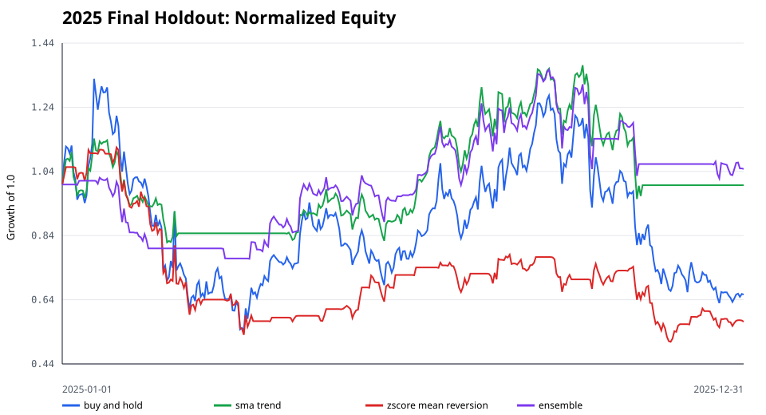
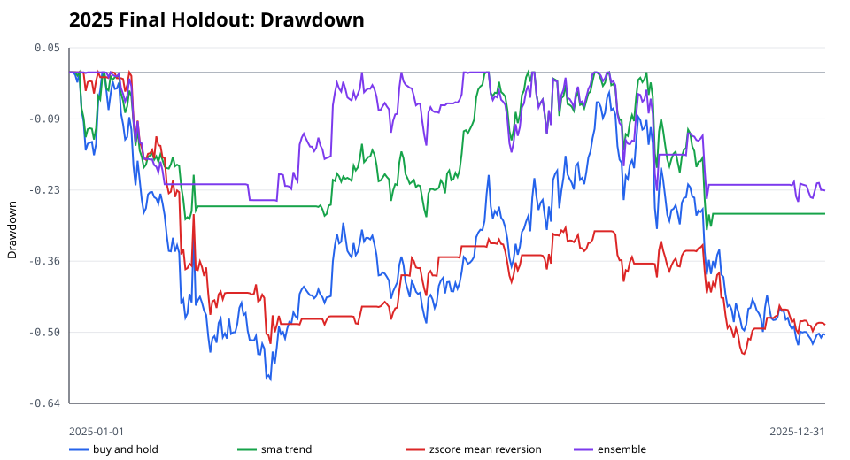
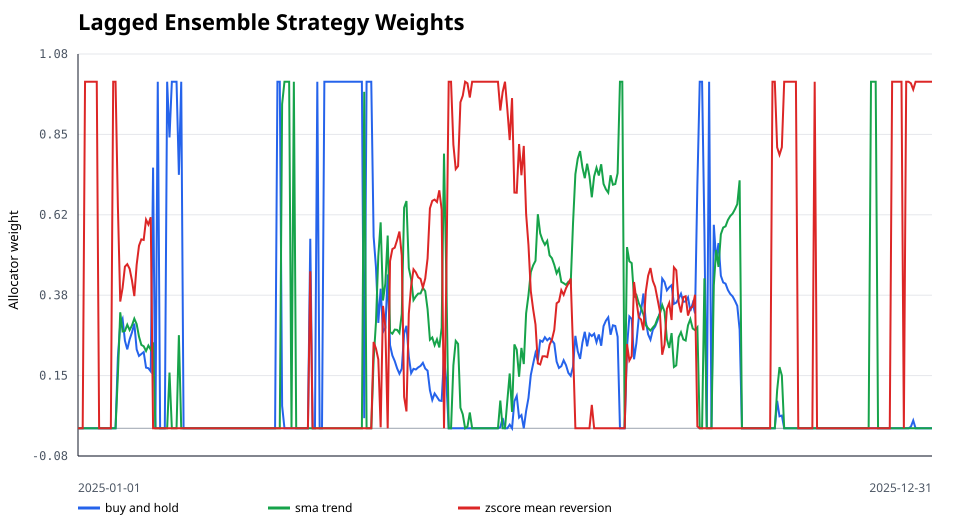
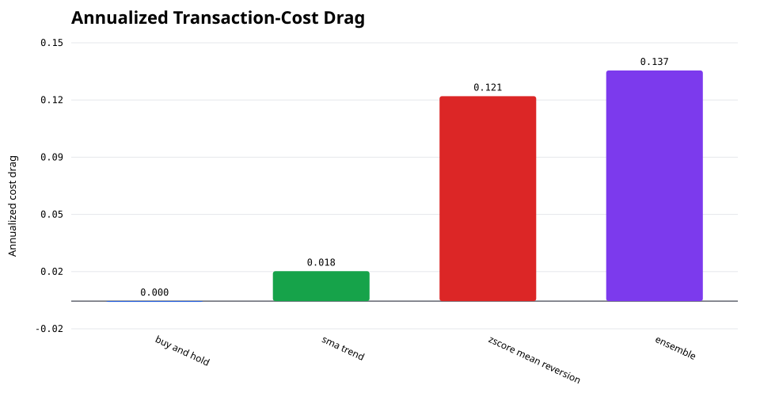
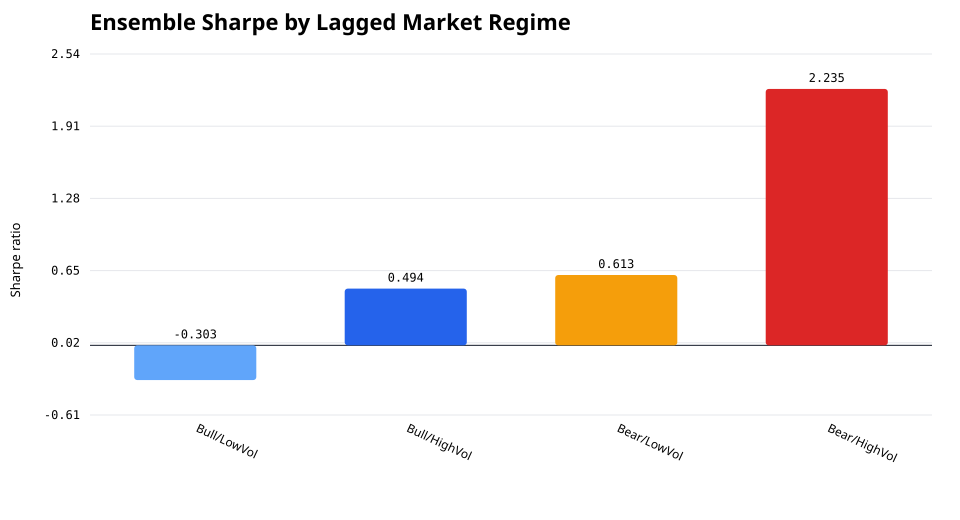

Portfolio results, with a checkable trail.
A read-only view of the repository's frozen 2025 holdout and evidence reports. Charts are verified against the committed SHA-256 manifest at build time.
2025 净值 / Equity curves

SHA-256 31e93c214c811391422c91d7794e1d7f820cbe4460c7a3b31911754b3398dd4f
回撤 / Drawdowns

SHA-256 36d198cc9d2bcc76fe99cb548a1a9c172d59e3b187d2c6969cd00b9fa118f3cc
策略权重 / Strategy weights

SHA-256 da7b1eb61b31529c7d6c61841249151e78e96cee2d20cb7a609487a39bba56c4
交易成本 / Cost drag

SHA-256 183efee573fe07a6d0684e50e2e73debc3a3b31546d8d2652e410d923705df59
市场状态 / Regime Sharpe

SHA-256 4f0d4484eb09158b9e3cea060449845a63650a7844270403c22507910d083b28
From run to root
Merkle root05136f84d6b1faa9226fd7b1a58b691707dc90be18688a2485fcbc3b7defa532
Local registry 0x5fbdb2315678afecb367f032d93f642f64180aa3 · chain 31337
The root commits to exact bytes. It does not establish market-data truth or future returns. This dashboard displays committed reports; independent replay requires the separately distributed raw snapshot and full evidence bundle.
Codex proposes; the frozen evaluator decides.
This pilot is separate from the formal M4 selection and 2025 holdout. Its proposal trace, fold metrics, and hash summary are published for review.